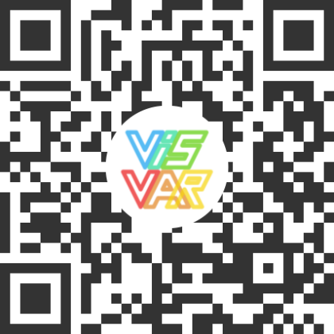

Immersive VisualAudioDesign: Spectral Editing in VR

Venue. Audio Mostly (2018) Full Paper
Authors. Lars Engeln, Natalie Hube, Rainer Groh
Abstract. VisualAudioDesign (VAD) is an attempt to design audio in a visual way. The frequency-domain visualized as a spectrogram construed as pixel data can be manipulated with image filters. Thereby, an approach is described to get away from direct DSP parameter manipulation to a more comprehensible sound design. Virtual Reality (VR) offers immersive insights into data and embodied interaction in the virtual environment. VAD and VR combined enrich spectral editing with a natural work-flow. Therefore, a design paper prototype for interaction with audio data in an virtual environment was used and examined.
